Custom Finishes
Basement Ceiling Drywall Installation
Exposed ceiling framing converted to a finished drywall surface
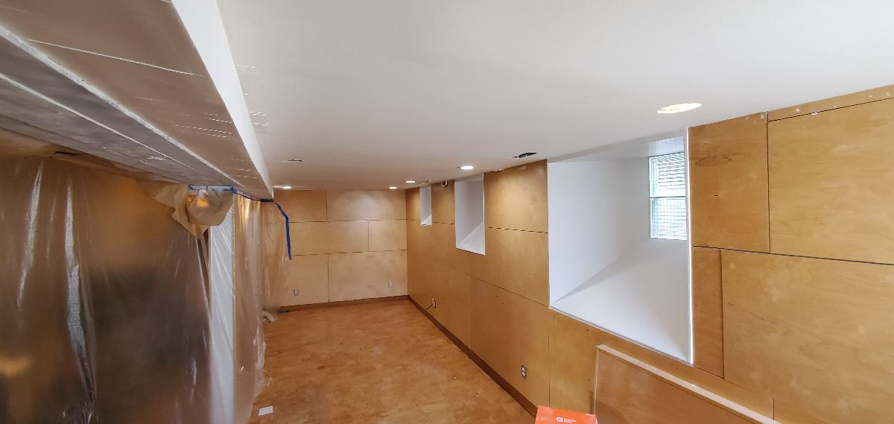
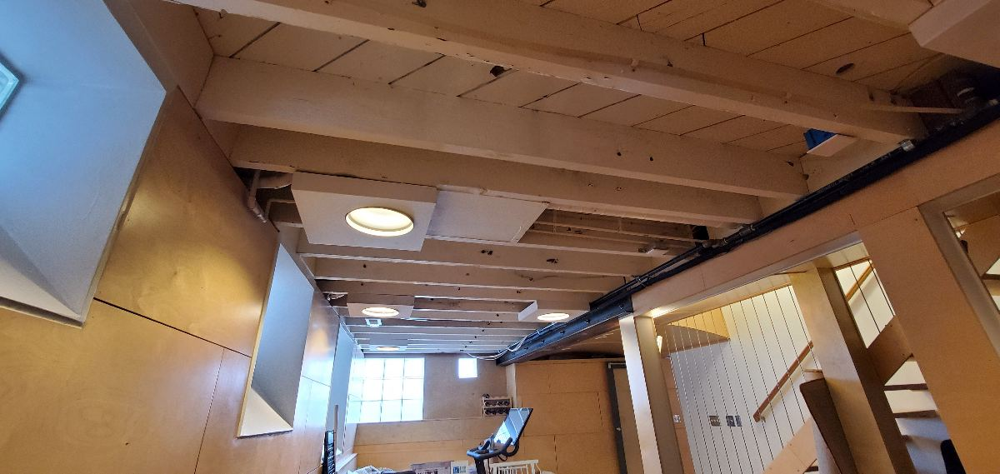
Custom finishes
Architectural details, drywall customization, fireplaces, built-ins and feature walls that require painting to work as part of the design.
Exposed ceiling framing converted to a finished drywall surface


Fireplace surround and adjacent surfaces unified with a cleaner finish
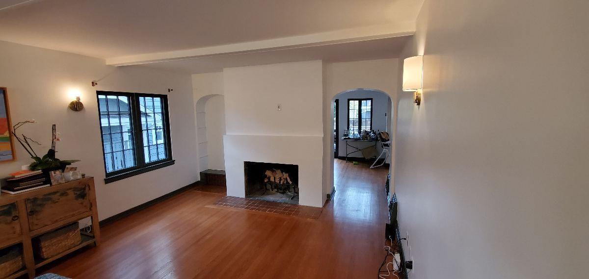
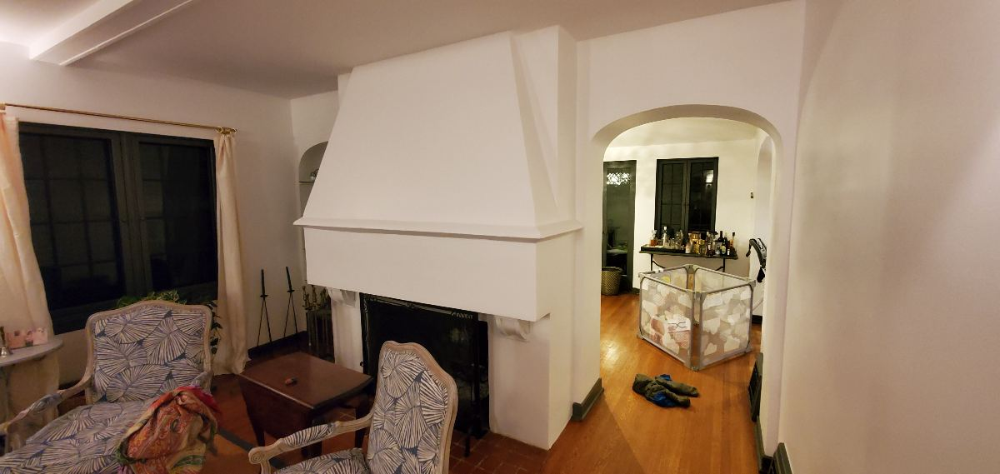
Blank wall to custom geometric feature
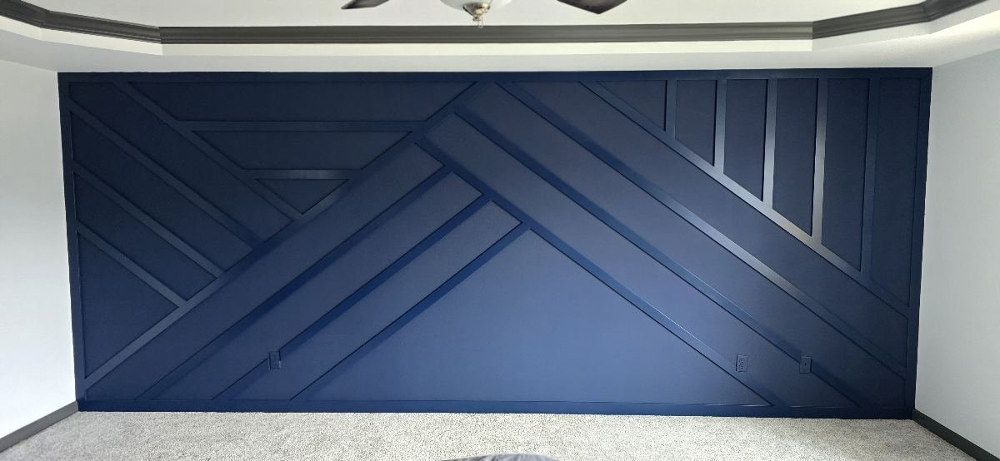
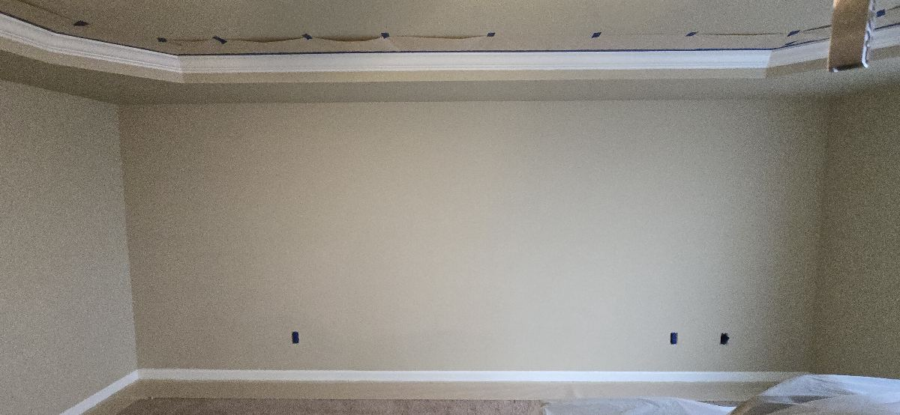
Built-ins and room finish transformation
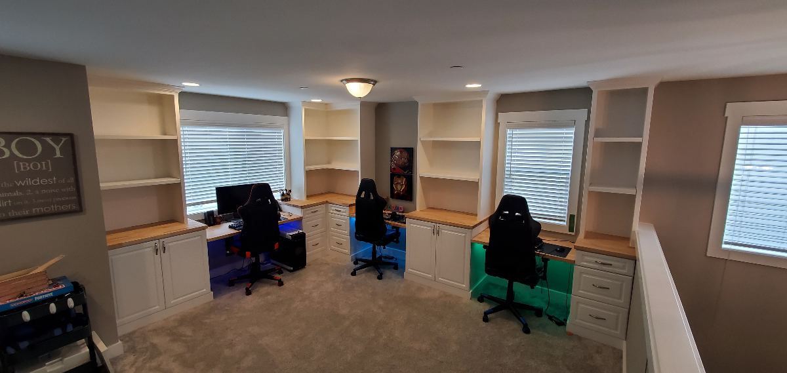
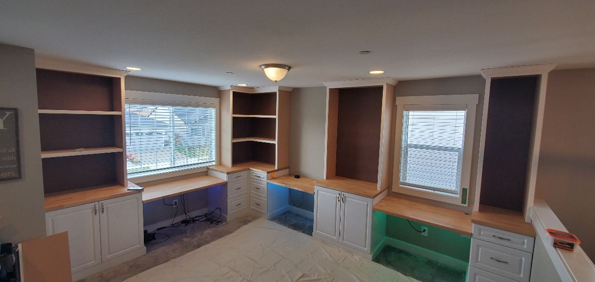
Natural built-in to integrated painted finish
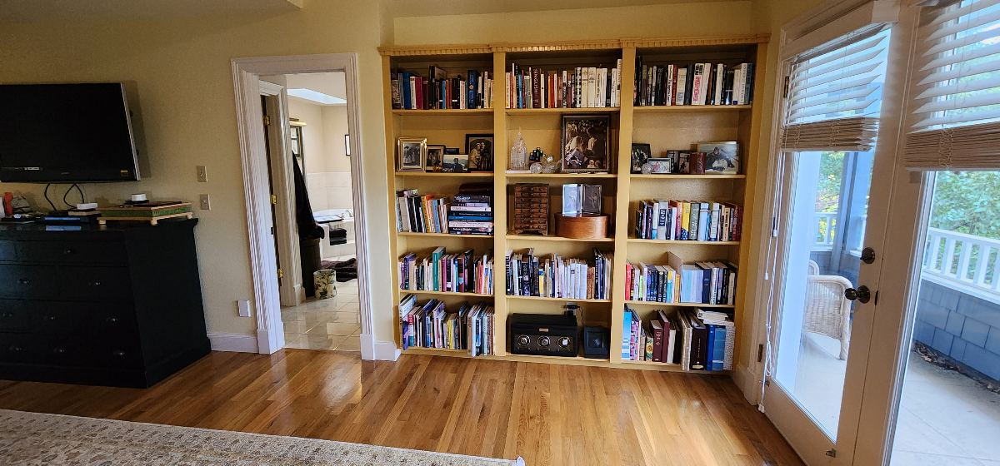
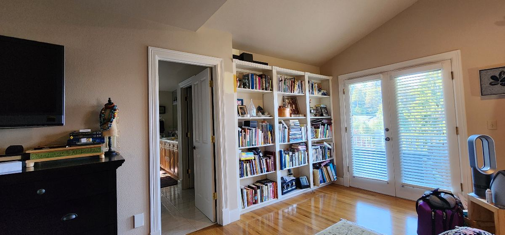
More custom finishes
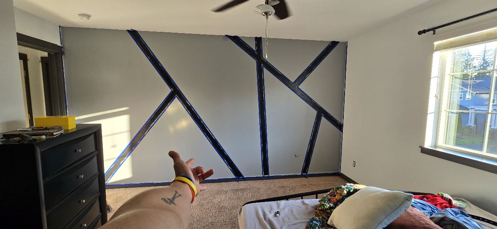
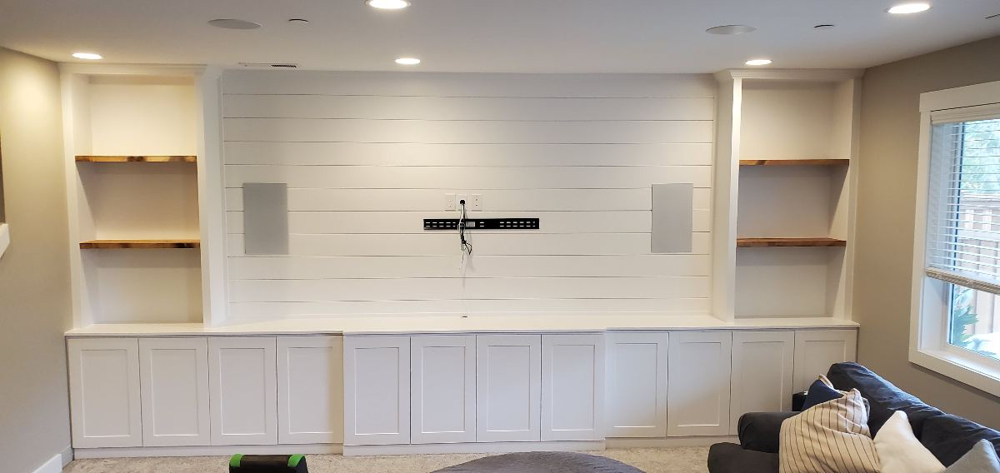
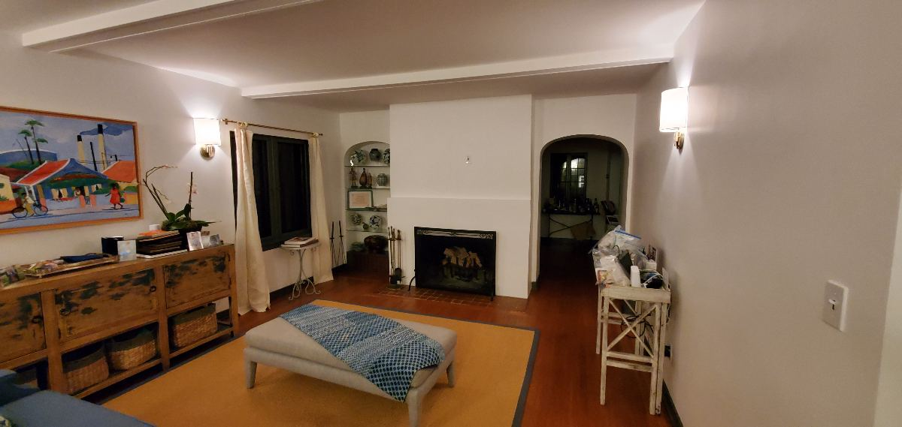
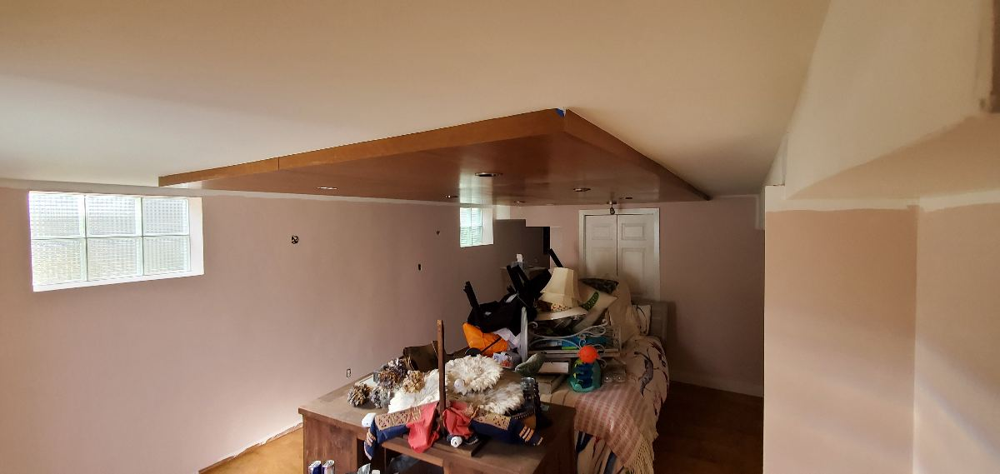
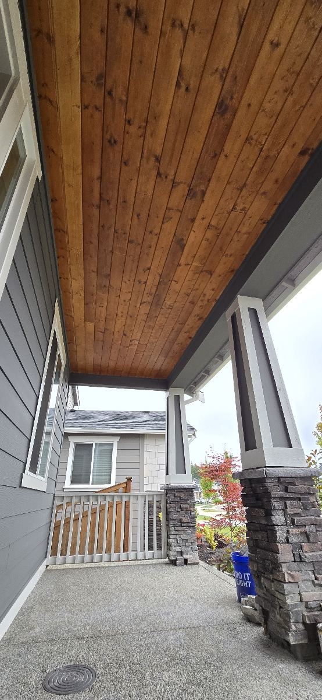
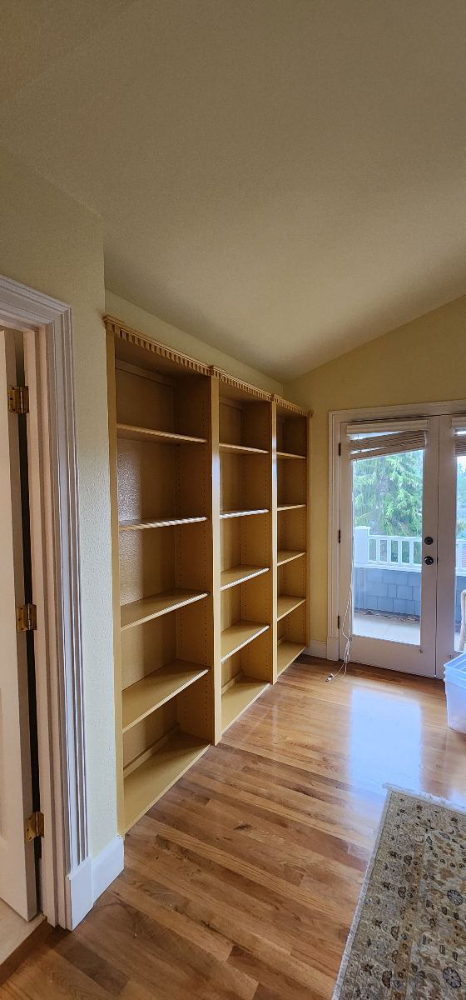
See the preparation behind the finish.
View the process gallery